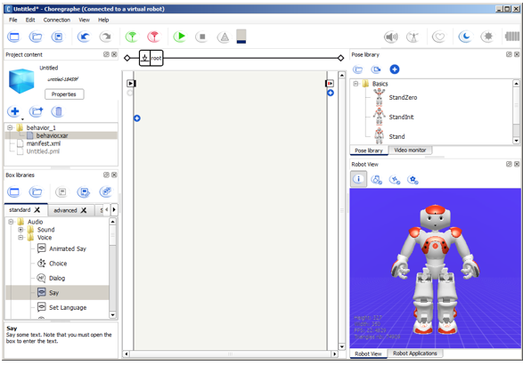
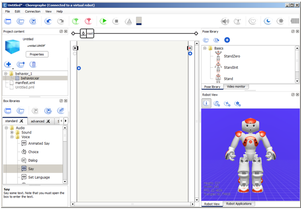
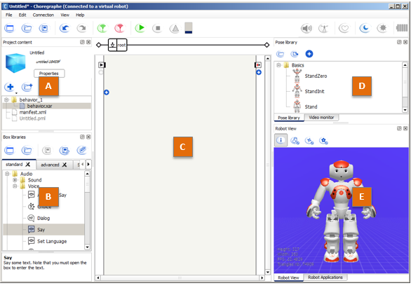
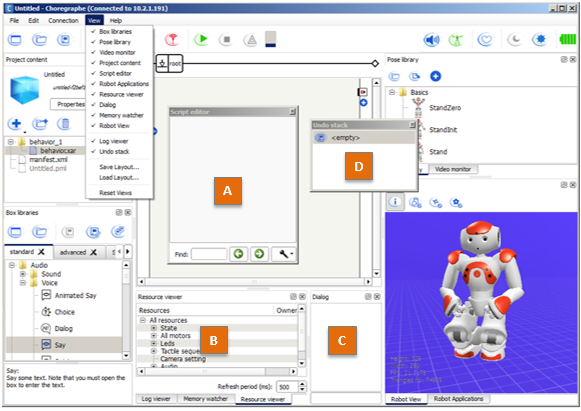

Main window¶
At startup, the following interface is displayed.
This interface contains a Menu Bar, a Toolbar and several Panels.
At startup, the following interface is displayed.
This interface contains a Menu Bar, a Toolbar and several Panels.
By default, the following panels are displayed:
| Part | Name | Part | Name |
|---|---|---|---|
| A | Project content panel | D | |
| B | Box libraries panel | E | |
| C | Flow diagram panel |
You can find more advanced panels in the View menu:
| Part | Name | Part | Name |
|---|---|---|---|
| A | Script editor panel | C | Dialog panel |
| B | D | Undo stack panel |
To create and save your own layout, see: Choregraphe layout.
These buttons are shortcuts to actions you will often need while creating behaviors. Note that keyboard shortcuts are also available.
| Button(s) | Function |
|---|---|

|
Create a New project, Open or Save a Project. |

|
Undo and Redo last actions made in the diagram. |


|
Connect, Disconnect or Try to reconnect your Aldebaran robot. For more information about the connection, see Connection Management. |

|
Play or Stop the opened Behavior. |

|
See the warnings and the errors that can occurs during the execution of your behavior. |


|
Progress bar that indicates the behavior loading when you click on Play. This indicator can be:
|

|
Enables you to set the volume of NAO’s speakers. |


|
Activate / deactivate the Animation Mode which enables you to easily manipulate your Aldebaran robot and store its position. For more information, see Getting started with the Animation Mode. This button can be:
|


|
Turns on and off the Autonomous Life on the robot. For further details, see: ALAutonomousLife. If you play a Behavior while the Autonomous Life is turned on, Choregraphe plays it using ALAutonomousLifeProxy::switchFocus(). |

|
Rest button. Sets the Stiffness off. If your Aldebaran robot is standing, before setting the Stiffness off, he goes to the Crouch posture. |

|
Wake Up button. Sets the Stiffness on. Additionally, if your Aldebaran robot is crouched, he also goes to the StandInit posture. Warning Do not touch your Aldebaran robot during a wake up; or the Active diagnosis may return false positive results. |


|
Indicate the level of NAO’s battery. This indicator can be:
|